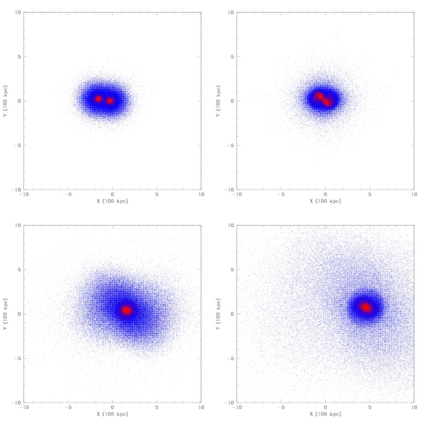

* projected distribution of particles on x-y plane
1) simulation A : slide
2) simulation B : slide
3) simulation C : slide
* density profile of merger remnants
1) simulation A : slide
2) simulation B : slide
3) simulation C : slide